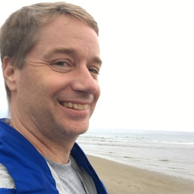

About Me

I go by "Mike" to most. I was born in upstate New York as the youngest of five children: one sister and three older brothers. Although we are a bit geographically dispersed now, we are all still very close. I am an identical twin. And to answer your questions: "yes we do look alike", "he is, by three minutes", and "no we don't feel each other's pain... usually!." Although I did confuse him with myself once, but that is a story for another day.
I was raised in Connecticut where I met my beautiful wife and moved to New Hampshire where we are raising three wonderful kids. We have a small cockapoo named "Cassie" that chimes in at about 115 decibels when exicited... which is often. I am fortunate to say that even though it takes hard work, I am blessed to be living the American dream.
My pair programmer - he doesn't type much but he's a great listener!
I have a degree in Computer Science from Central Connecticut State University back when the PC was the big technology disrupter, people were trying to figure out what that relational database thing was all about and knowing C/Unix was considered edgy. I programmed embedded systems for factory automation equipment, and moved on to embedded financial calculators for insurance companies. I work for Cigna Healthcare as an Enterprise Architect helping to create an omni-channel experience for our customers. It's another way of saying we're building self service channels and keeping our customer service agents from ever having ask a caller: "Would you read that [letter/email/sms/] to me?"
When I have a few minute of spare time, if I'm not chauffering kids or taking care of the house, I enjoy a variety of activities: glamping with family and friends (it used to be winter camping I swear!), hiking, genealogy, video/board gaming and am the quartermaster for a local swim club concession. I sometimes dabble in crafty hobbies such as mailling, ring making, electronics, and am an enterprising scholar of history.
I am currently refreshing my techncial skill set with the UNH Full Stack Development Bootcamp. My main motivation is to "keep up with the cool kids" since we live in a fast paced ever changing world. It is one leg of a three part technical strategy: full stack, serverless and machine learning.